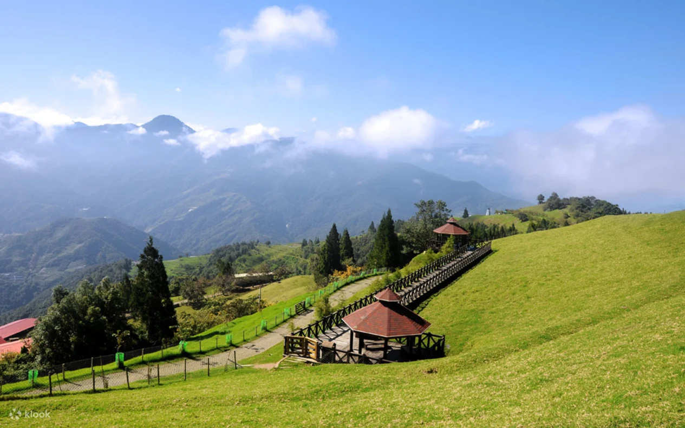

台灣的小瑞士，霧上桃園與綿羊的奇幻邂逅

清境農場位於南投縣仁愛鄉，海拔介於 1700 至 2000 公尺之間，是台灣著名的三大高山農場之一。這裡因空氣清新、林 comprehensive 茂密、四季氣候宜人，且擁有大片綿延不絕的翠綠青青草原，而享有「台灣小瑞士」的美譽。清晨時分，山谷間經常雲霧繚繞，遠處的高山在雲海中若隱若現，宛如仙境。在這裡，遊客可以近距離與可愛的綿羊互動，或是漫步在高空步道上，飽覽壯麗的中央山脈風光，是遠離都市喧囂的高山避暑聖地。
農場最具人氣的觀光核心。在寬廣起伏的高山草原上，成群的柯利黛綿羊自由自在地低頭吃草。最受歡迎的「綿羊秀」由專業牧羊人展現精彩的牧羊犬趕羊與神乎其技的剪羊毛表演，幽默有趣的互動常逗得全場大笑。
全台海拔最高、總長約 1.6 公里的無障礙高空步道。步道架設在樹冠層之中，視野毫無遮蔽。漫步其中，腳下是成群覓食的綿羊，抬頭便能遠眺奇萊連峰、能高山等壯麗群山，彷彿漫步在雲端。
充滿北歐童話風情的精緻花園。園內規劃了美麗的歐式花園、水舞秀、天鵝湖以及各式浪漫的造景藝術。夜晚時分，花園內會點亮五彩繽紛的燈飾，搭配水舞表演，呈現與白天截然不同的夢幻夜景。